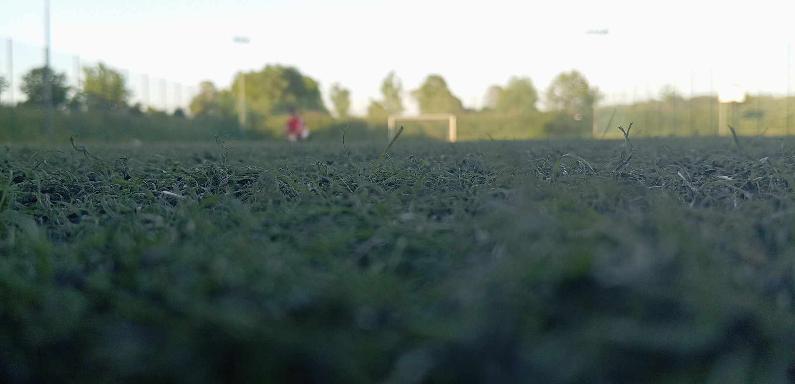
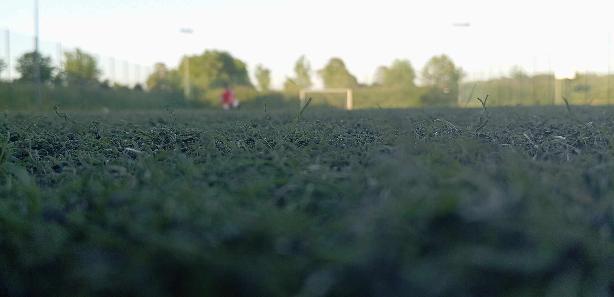

Szyleny FC
Razem tworzymy historię!
Witaj na stronie głównej naszego klubu. Przejdź do zakładek, aby dowiedzieć się więcej o drużynie, terminarzu lub skontaktować się z nami! <3
Witaj na stronie głównej naszego klubu. Przejdź do zakładek, aby dowiedzieć się więcej o drużynie, terminarzu lub skontaktować się z nami! <3
